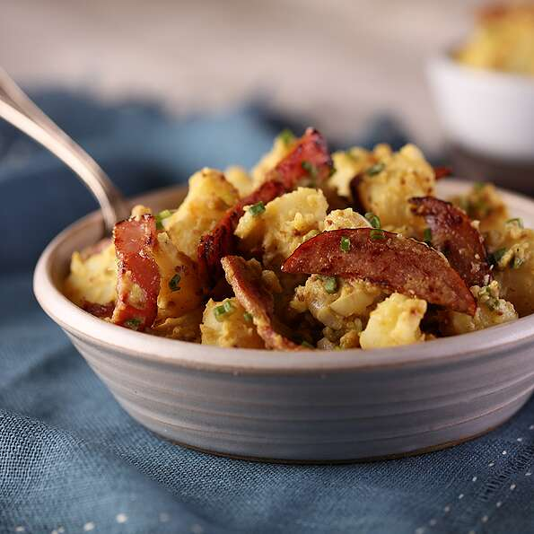

German Potato Salad with Chopped Ham 🇩🇪

Description
A flavorful twist to a German classic, this potato salad gets a big boost
of flavor from our ham.
Ingredients
-
3 pounds red potatoes, peeled and cubed (such as Black Gold Farms).
- 1 tablespoon neutral cooking oil.
-
1 (16 ounce) package Farmland® Sliced Ham, cut into strips about
1/2-inch wide.
- 1 cup diced white onion.
- ½ cup white vinegar.
- ½ cup Dijon mustard.
- ¼ cup white sugar.
- ¼ cup minced fresh chives.
- Salt and pepper, to taste.
Steps
-
Cook potatoes in boiling salted water until just tender, about 20
minutes.
-
While potatoes are cooking, heat pan over medium heat and add oil. When
oil is hot, add sliced ham and cook until lightly browned with crispy,
golden edges, about 5 minutes.
-
Drain potatoes and allow to cool slightly. While still warm, gently mix
potatoes in large bowl with all other ingredients. Taste for seasoning.
Previous recipe
Go back to home